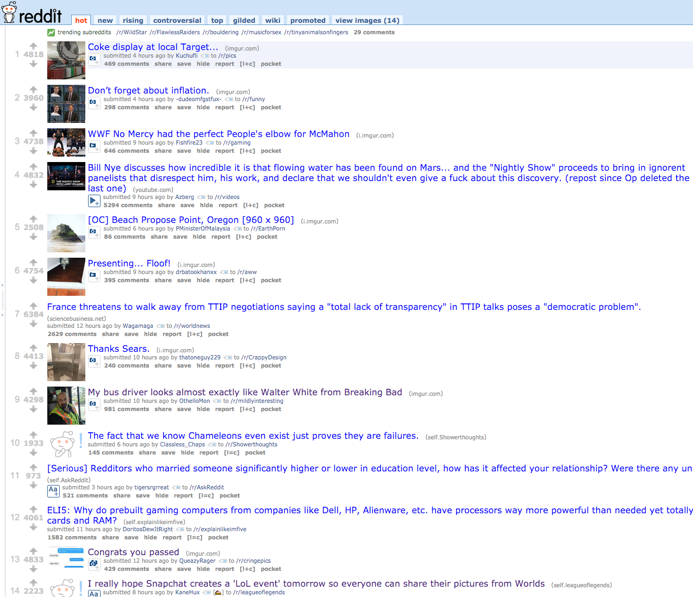
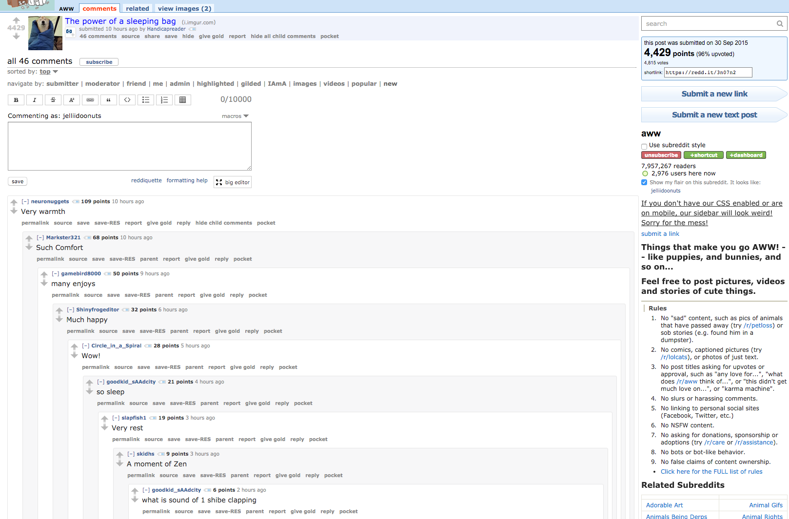
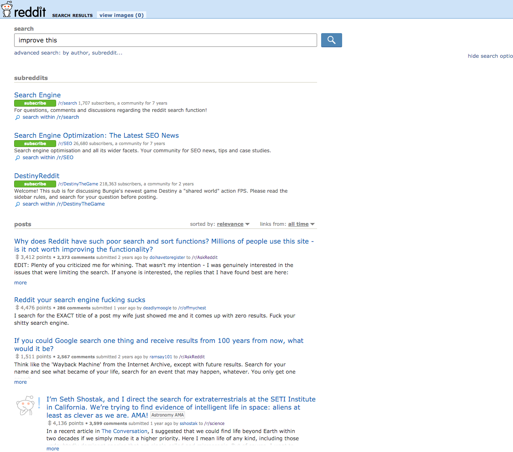

You must complete following "Views" for your website:
-
List/Home View
 -
Thread View
 -
Search View

As long as you complete the required views, everything's up to your creativity!
- UI Aesthetics: 10 points
- User Experience: 10 points
- Write-up of your design decisions: 4 points
- Check-in: 4 points
- Total: 28 points
You are not expected to create the "functionalities" for each view: when you click on a button or a link it wouldn't do anything. You are basically only creating a mockup.
Also, you are not required to create the UI for all the features in each view; for example, you may skip the calendar view in the main page.
You will be working with a team of 3 students. If you want to form your own team, you must complete the Team Assignment form by SUNDAY, OCTOBER 4th at 1PM: Team Assignment Form There can be a maximum of 2 CS students per team. (intended CS counts as CS) Otherwise, we will form a team for you and will let you know of the team assignment by this Sunday. Don't worry - we make sure we have a magic formula to form a team with great chemistry & amazing skillset ;) It will be a great opportunity for you to meet awesome new people!
You are required to check-in with your progress midway on Sunday, October 11th. Here's the form the check-in: Check-in form. You should sign up for a slot by leaving a comment under your assigned TA (Right click => Comment). Not all of your team members must show up, but at least two people should be present for the check-in.
We will review your design decisions midway, and will offer you help on design and/or programming side of your implementation if you need. You should complete at least one view by the time of the checkin to receive full credit.
Please include a writeup explaining the design decision you made for each of the views in your submission. In particular, you should mention your design decisions in terms of: spacing, positioning, typography & images, and color.
Submit the following files as a zip file through Assignments under Resources tab of the WDD Portal:
- index.html
- list.html
- item.html
- assets/css/style.css
- assets/img/
Only one of your project partners need to submit the project files.
Your assignment must be submitted as a zip file. Submission will automatically fail if your submission does not contain the index.html or if is not a zip file.
This assignment is due by Thursday, October 22nd at 4PM.